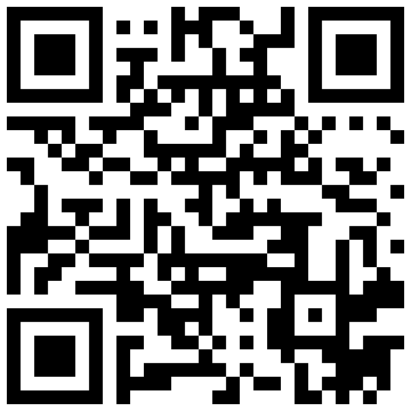

🖨️
一鍵列印 / 存為 A4 PDF 海報
📱
前往線上報名系統
🏛️
孔雀王朝第二期 ✕ 中華綠生活手工皂協會
⚠️ 炸物廢油會堵塞水管，怎麼辦？
🌿
免費教你把廢油變肥皂！
🧼
化
食安危機
為
綠色轉機
👥
參與對象
本社區全體住戶
🍳
住戶自備
廚房炸物廢油
📍
活動地點
1 樓會議室
👩🏫
公益師資
王珈洛 理事長
📅
活動時段
09/21(一)下午2～4點
🎯
預估人數
10人以上才開課
⏰
報名提醒
：希望大家能在
9/16(三)中午前報名
，以便統計人數、準備足夠的製作器材與原料。
公益贊助
全程完全
免費
師資、器材耗材全額贊助，每人親手帶回 300g 環保家事皂！
資源循環
廚房廢油變
黃金
化廢炸油為天然去污皂，徹底解決管線油垢，守護水管暢通。
⏱️
活動流程（共 120 分鐘）
13:40–14:00
場地佈置與住戶報到
14:00–14:20
食安解密與廢油再生觀念
14:20–15:40
動手實作：環保家事皂
15:40–16:00
成品合影與場地迅速復原

📱 拿出手機掃碼 ➔
10 秒線上預約報名
或
至警衛室登記即可（家中無油現場支援）
🖨️
一鍵列印 / 存為 A4 PDF 海報
📱
前往線上報名系統